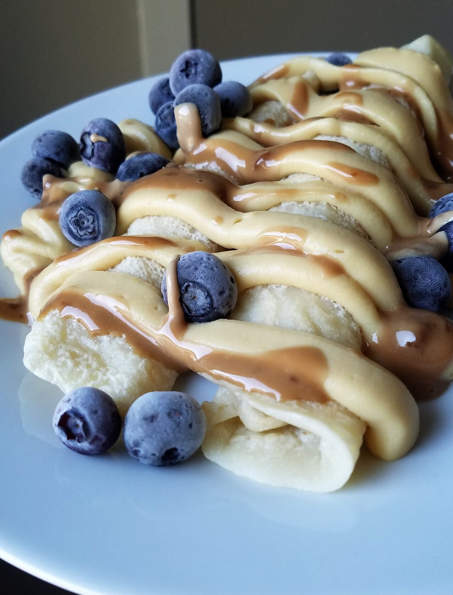

Vegan Blueberry Cheesecake Crepes

Crepes are slowly making a return back into my life after I nailed the texture last week. I made these vegan blueberry cheesecake crepes. They are crepes topped with blueberries, a cheesecake protein icing, and carob chocolate tahini. These are simple, sugar free, and can be made gluten free!
Ever since going vegan, my "go-to" crepe recipe was thrown out the window. In the past, I relied on a recipe mainly comprised of egg whites and whey protein powder. After removing the non-vegan ingredients...that left...nothing. Hahah. And I just haven't found a suitable recipe that I enjoy ever since. But I got this ener-g egg replacer powder on iherb.com and it works fannnntastically.
These vegan blueberry cheesecake crepes are thin, crisp on the exterior, and slightly chewy on the inside. They are sweet and light. They're perfect in my eyes. They're so simple that there's no reason not to give them a try :p
Vegan Blueberry Cheesecake Crepes
Serves: 1
Batter
-
3 TBSP flour (use gluten free if needed)
-
1 TBSP coconut flour
-
1/2 TBSP energ egg replacer powder (or tapioca starch)
-
1/4 tsp baking powder
-
water
Cheesecake Icing + Toppings
-
1 TBSP sugar free cheesecake pudding mix
-
15 g vanilla pea protein powder
-
1 stevia packet
-
water
-
2-3 TBSP blueberries
To make the crepe batter, mix the flour, coconut flour, egg replacer powder, and baking powder. Then slowly mix in water until a thin batter forms. You want it thinner than a typical pancake batter. It should require 1/4-1/3 cup water. Once the batter is ready, spray a large pan with nonstick spray and pour a thin layer on the pan. Let cook for 1-2 minutes until browned, flip, and cook 1 more minute. Set on a plate. Repeat the process for the remaining batter.
To make the cheesecake icing, mix the pudding mix, protein powder, and stevia. Then, again, slowly add in water while mixing until a thick icing forms. This will only require 2-3 tbsp of water. Spread onto the crepes. Top with blueberries, and enjoy!!